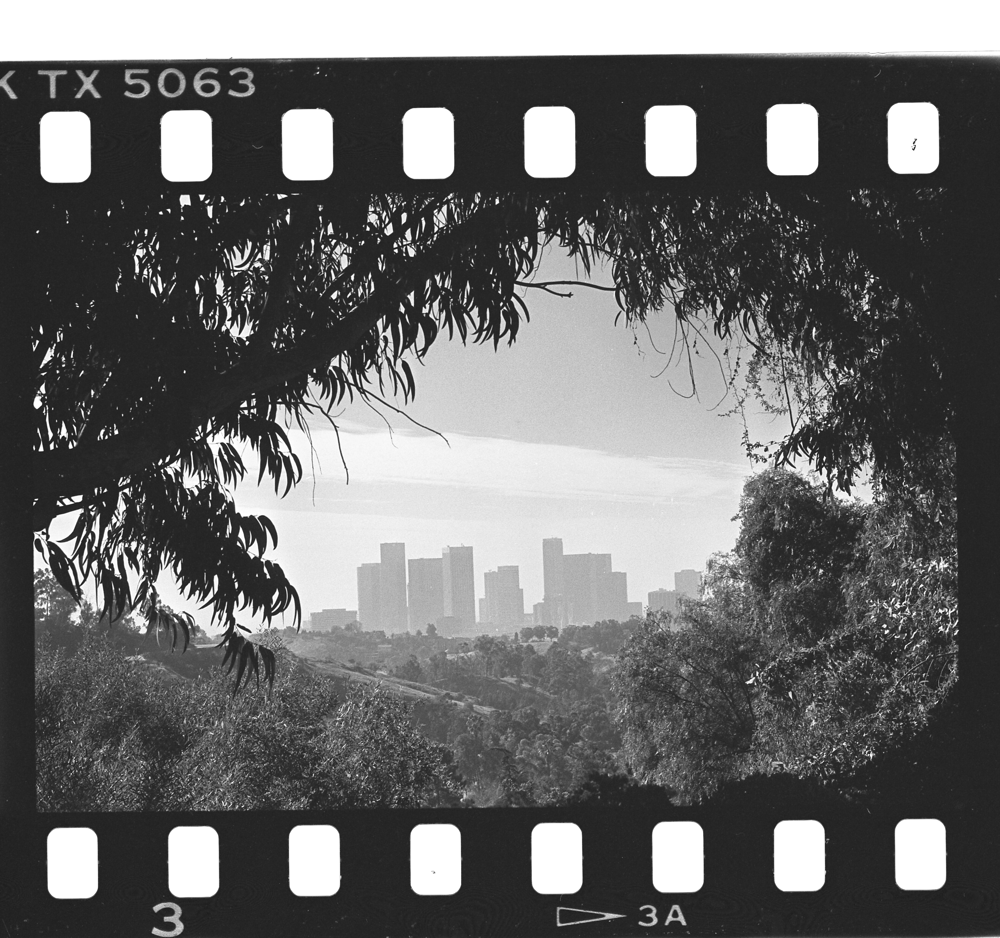

Hello world!


I like to think (and
the sooner the better!)
of a cybernetic meadow
where mammals and computers
live together in mutually
programming harmony
like pure water
touching clear sky.

There is something uneasy in the Los Angeles air this afternoon, some unnatural stillness, some tension. What it means is that tonight a Santa Ana will begin to blow, a hot wind from the northeast whining down through the Cajon and San Gorgonio Passes, blowing up sandstorms out along Route 66, drying the hills and the nerves to the flashpoint. For a few days now we will see smoke back in the canyons, and hear sirens in the night…It is hard for people who have not lived in Los Angeles to realize how radically the Santa Ana figures in the local imagination. The city burning is Los Angeles' deepest image of itself. . . Los Angeles weather is the weather of catastrophe, of apocalypse, and. . . the violence and the unpredictability of the Santa Ana affect the entire quality of life in Los Angeles, accentuate its impermanence, its unreliability. The wind shows us how close to the edge we are. — Joan Didion, "Los Angeles Notebook," 1978
my portfolio!